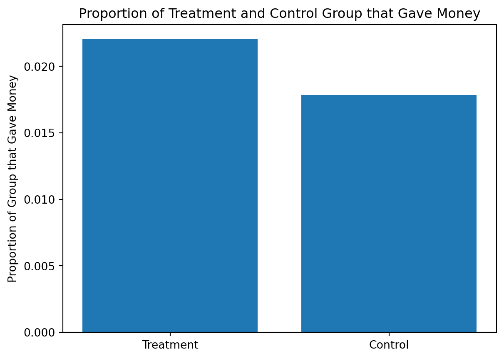
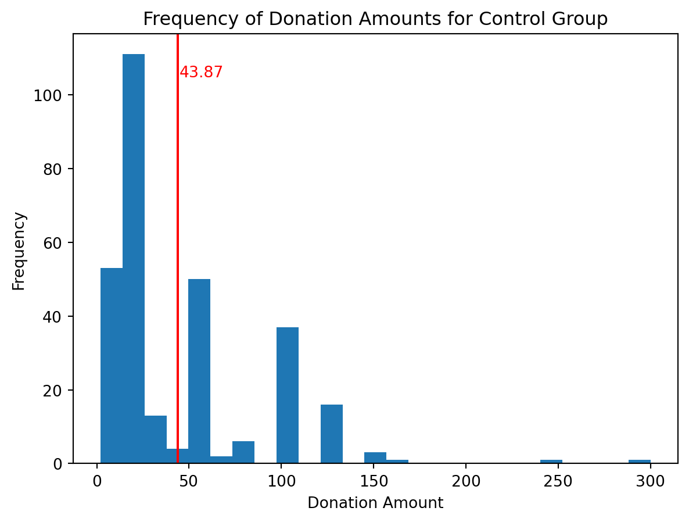
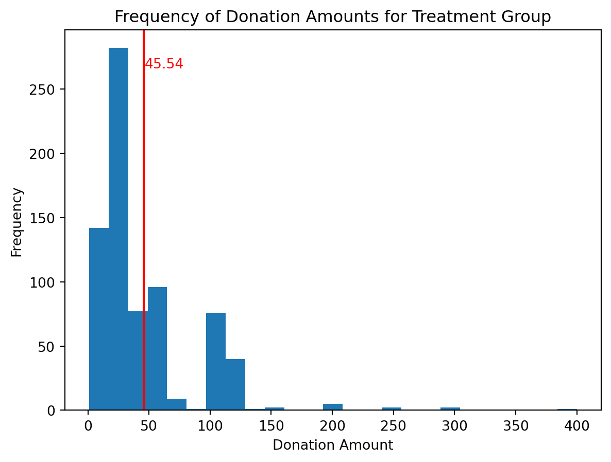

Dean Karlan at Yale and John List at the University of Chicago conducted a field experiment to test the effectiveness of different fundraising letters. They sent out 50,000 fundraising letters to potential donors, randomly assigning each letter to one of three treatments: a standard letter, a matching grant letter, or a challenge grant letter. They published the results of this experiment in the American Economic Review in 2007. The article and supporting data are available from the AEA website and from Innovations for Poverty Action as part of Harvard’s Dataverse.
The experiment was conducted through a direct mail campaign for a liberal nonprofit organization. The authors assigned 67% of the 50,000 to the treatment group and 33% to the control group.
The letters sent to the treatment and control group were the same except in the following regards:
The treatment group letter had an additional paragraph saying that their donation will be matched.
The reply card for the treatment group had details on the matching grant.
The letters were randomized through 3 different dimensions: 1. matching price ratio 2. maximum match amount 3. suggested donation amount
The experiment found that using matching donations increases the revenue per solicitation and the probability that someone donates.
It also found that larger match ratios relative to smaller match ratios have no additional impact. This project seeks to replicate their results.
Overall, the authors found a unique way to measure the scope of a public good (donations) in a real world setting, rather than hypothetical scenarios. This is a valuable contribution to the literature on charitable giving and public goods.
Data
Description
The dataset seen below which Karlan and List gathered on the 50,083 subjects has over 52 columns or variables. The main ones are concerned about for our research are ‘gave’ (if the individual donated any amount), ‘amount’ (what amount they donated), ‘treatment’ (if they were a part of the treatment or control group), and ‘ratio’ (matching ratio given to that subject).
Many of the columns are redundant (treatmeant vs control columns, ratio columns vs ratio1, ratio2, ratio3 columns), however they allow us to more easily filter the data and make calculations.
In the second cell, you can see the description of variables ‘treatment’ and ‘control’. Through this, it is shown that 66% of the participants were a part of the treatment group, and 33% were a part of the control group.
Since many of these variables are binary, a 1 or 0 is used to describe whether the participant had that treatment, variables, or attribute, which allows analysts to easily calculate proportions or percentages like with treatment and control.
import pandas as pdkarlan = pd.read_stata("karlan_list_2007.dta")karlan
treatment
control
ratio
ratio2
ratio3
size
size25
size50
size100
sizeno
...
redcty
bluecty
pwhite
pblack
page18_39
ave_hh_sz
median_hhincome
powner
psch_atlstba
pop_propurban
0
0
1
Control
0
0
Control
0
0
0
0
...
0.0
1.0
0.446493
0.527769
0.317591
2.10
28517.0
0.499807
0.324528
1.000000
1
0
1
Control
0
0
Control
0
0
0
0
...
1.0
0.0
NaN
NaN
NaN
NaN
NaN
NaN
NaN
NaN
2
1
0
1
0
0
$100,000
0
0
1
0
...
0.0
1.0
0.935706
0.011948
0.276128
2.48
51175.0
0.721941
0.192668
1.000000
3
1
0
1
0
0
Unstated
0
0
0
1
...
1.0
0.0
0.888331
0.010760
0.279412
2.65
79269.0
0.920431
0.412142
1.000000
4
1
0
1
0
0
$50,000
0
1
0
0
...
0.0
1.0
0.759014
0.127421
0.442389
1.85
40908.0
0.416072
0.439965
1.000000
...
...
...
...
...
...
...
...
...
...
...
...
...
...
...
...
...
...
...
...
...
...
50078
1
0
1
0
0
$25,000
1
0
0
0
...
0.0
1.0
0.872797
0.089959
0.257265
2.13
45047.0
0.771316
0.263744
1.000000
50079
0
1
Control
0
0
Control
0
0
0
0
...
0.0
1.0
0.688262
0.108889
0.288792
2.67
74655.0
0.741931
0.586466
1.000000
50080
0
1
Control
0
0
Control
0
0
0
0
...
1.0
0.0
0.900000
0.021311
0.178689
2.36
26667.0
0.778689
0.107930
0.000000
50081
1
0
3
0
1
Unstated
0
0
0
1
...
1.0
0.0
0.917206
0.008257
0.225619
2.57
39530.0
0.733988
0.184768
0.634903
50082
1
0
3
0
1
$25,000
1
0
0
0
...
0.0
1.0
0.530023
0.074112
0.340698
3.70
48744.0
0.717843
0.127941
0.994181
50083 rows × 51 columns
karlan.describe()
treatment
control
ratio2
ratio3
size25
size50
size100
sizeno
askd1
askd2
...
redcty
bluecty
pwhite
pblack
page18_39
ave_hh_sz
median_hhincome
powner
psch_atlstba
pop_propurban
count
50083.000000
50083.000000
50083.000000
50083.000000
50083.000000
50083.000000
50083.000000
50083.000000
50083.000000
50083.000000
...
49978.000000
49978.000000
48217.000000
48047.000000
48217.000000
48221.000000
48209.000000
48214.000000
48215.000000
48217.000000
mean
0.666813
0.333187
0.222311
0.222211
0.166723
0.166623
0.166723
0.166743
0.222311
0.222291
...
0.510245
0.488715
0.819599
0.086710
0.321694
2.429012
54815.700533
0.669418
0.391661
0.871968
std
0.471357
0.471357
0.415803
0.415736
0.372732
0.372643
0.372732
0.372750
0.415803
0.415790
...
0.499900
0.499878
0.168560
0.135868
0.103039
0.378105
22027.316665
0.193405
0.186599
0.258633
min
0.000000
0.000000
0.000000
0.000000
0.000000
0.000000
0.000000
0.000000
0.000000
0.000000
...
0.000000
0.000000
0.009418
0.000000
0.000000
0.000000
5000.000000
0.000000
0.000000
0.000000
25%
0.000000
0.000000
0.000000
0.000000
0.000000
0.000000
0.000000
0.000000
0.000000
0.000000
...
0.000000
0.000000
0.755845
0.014729
0.258311
2.210000
39181.000000
0.560222
0.235647
0.884929
50%
1.000000
0.000000
0.000000
0.000000
0.000000
0.000000
0.000000
0.000000
0.000000
0.000000
...
1.000000
0.000000
0.872797
0.036554
0.305534
2.440000
50673.000000
0.712296
0.373744
1.000000
75%
1.000000
1.000000
0.000000
0.000000
0.000000
0.000000
0.000000
0.000000
0.000000
0.000000
...
1.000000
1.000000
0.938827
0.090882
0.369132
2.660000
66005.000000
0.816798
0.530036
1.000000
max
1.000000
1.000000
1.000000
1.000000
1.000000
1.000000
1.000000
1.000000
1.000000
1.000000
...
1.000000
1.000000
1.000000
0.989622
0.997544
5.270000
200001.000000
1.000000
1.000000
1.000000
8 rows × 48 columns
Variable Definitions
Variable
Description
treatment
Treatment
control
Control
ratio
Match ratio
ratio2
2:1 match ratio
ratio3
3:1 match ratio
size
Match threshold
size25
$25,000 match threshold
size50
$50,000 match threshold
size100
$100,000 match threshold
sizeno
Unstated match threshold
ask
Suggested donation amount
askd1
Suggested donation was highest previous contribution
askd2
Suggested donation was 1.25 x highest previous contribution
askd3
Suggested donation was 1.50 x highest previous contribution
ask1
Highest previous contribution (for suggestion)
ask2
1.25 x highest previous contribution (for suggestion)
ask3
1.50 x highest previous contribution (for suggestion)
amount
Dollars given
gave
Gave anything
amountchange
Change in amount given
hpa
Highest previous contribution
ltmedmra
Small prior donor: last gift was less than median $35
freq
Number of prior donations
years
Number of years since initial donation
year5
At least 5 years since initial donation
mrm2
Number of months since last donation
dormant
Already donated in 2005
female
Female
couple
Couple
state50one
State tag: 1 for one observation of each of 50 states; 0 otherwise
nonlit
Nonlitigation
cases
Court cases from state in 2004-5 in which organization was involved
statecnt
Percent of sample from state
stateresponse
Proportion of sample from the state who gave
stateresponset
Proportion of treated sample from the state who gave
stateresponsec
Proportion of control sample from the state who gave
stateresponsetminc
stateresponset - stateresponsec
perbush
State vote share for Bush
close25
State vote share for Bush between 47.5% and 52.5%
red0
Red state
blue0
Blue state
redcty
Red county
bluecty
Blue county
pwhite
Proportion white within zip code
pblack
Proportion black within zip code
page18_39
Proportion age 18-39 within zip code
ave_hh_sz
Average household size within zip code
median_hhincome
Median household income within zip code
powner
Proportion house owner within zip code
psch_atlstba
Proportion who finished college within zip code
pop_propurban
Proportion of population urban within zip code
Balance Test
As an ad hoc test of the randomization mechanism, I provide a series of tests that compare aspects of the treatment and control groups to assess whether they are statistically significantly different from one another.
# Linear Regression - mrm2import pyrsm as rsmlr_mrm2 = rsm.regress( data = karlan[['treatment', 'mrm2']], evar ="treatment", rvar ="mrm2" )lr_mrm2.summary()
Linear regression (OLS)
Data : Not provided
Response variable : mrm2
Explanatory variables: treatment
Null hyp.: the effect of x on mrm2 is zero
Alt. hyp.: the effect of x on mrm2 is not zero
coefficient std.error t.value p.value
Intercept 12.998 0.094 138.979 < .001 ***
treatment 0.014 0.115 0.119 0.905
Signif. codes: 0 '***' 0.001 '**' 0.01 '*' 0.05 '.' 0.1 ' ' 1
R-squared: 0.0, Adjusted R-squared: -0.0
F-statistic: 0.014 df(1, 50080), p.value 0.905
Nr obs: 50,082
Linear regression (OLS)
Data : Not provided
Response variable : couple
Explanatory variables: treatment
Null hyp.: the effect of x on couple is zero
Alt. hyp.: the effect of x on couple is not zero
coefficient std.error t.value p.value
Intercept 0.093 0.002 41.124 < .001 ***
treatment -0.002 0.003 -0.584 0.559
Signif. codes: 0 '***' 0.001 '**' 0.01 '*' 0.05 '.' 0.1 ' ' 1
R-squared: 0.0, Adjusted R-squared: -0.0
F-statistic: 0.341 df(1, 48933), p.value 0.559
Nr obs: 48,935
Balance Test Results
The intercept coefficients calculated for mrm2 and couple variables are exactly the same as in table 1 of the paper for the control group. Also, when incorporating the coefficients for treatment (treatment = 1), they also equal the mean values in table 1 for the treatment group.
For mrm2 (months since last donation), the control group mean was 12.998 and that increases to 13.012 if they were a part of the treatment group. This is not a large disparity and as such did not prove to be statistically significant on a 95% confidence interval.
For couple (whether the donor was a couple), the control group mean was 0.093 (interpreted as 9.3% of donors in the control group were couples) and that decreases to 0.091 if they were a part of the treatment group. This is also not a large disparity and as such did not prove to be statistically significant on a 95% confidence interval.
Experimental Results
Charitable Contribution Made
First, I analyze whether matched donations lead to an increased response rate of making a donation.
todo: make a barplot with two bars. Each bar is the proportion of people who donated. One bar for treatment and one bar for control.
# find proportion of treatment group that gave moneytreat_gave = karlan[karlan['treatment'] ==1]['gave'].mean()control_gave = karlan[karlan['treatment'] ==0]['gave'].mean()print(treat_gave, control_gave)
0.02203856749311295 0.017858212980164198
# create bar graph for proportion of treatment/control group that gave moneyimport matplotlib.pyplot as pltfig, ax = plt.subplots()ax.bar(['Treatment', 'Control'], [treat_gave, control_gave])ax.set_ylabel('Proportion of Group that Gave Money')ax.set_title('Proportion of Treatment and Control Group that Gave Money')plt.show()

todo: run a t-test between the treatment and control groups on the binary outcome of whether any charitable donation was made. Also run a bivariate linear regression that demonstrates the same finding. (It may help to confirm your calculations match Table 2a Panel A.) Report your statistical results and interpret them in the context of the experiment (e.g., if you found a difference with a small p-value or that was statistically significant at some threshold, what have you learned about human behavior? Use mostly English words, not numbers or stats, to explain your finding.)
# Calculate t-stat for those who donated if they were a part of treatment or control groupgave_treat = karlan[karlan['treatment'] ==1]['gave']gave_control = karlan[karlan['treatment'] ==0]['gave']gave_t_mean = gave_treat.mean()gave_c_mean = gave_control.mean()gave_t_std = gave_treat.std()gave_c_std = gave_control.std()gave_t_n = gave_treat.count()gave_c_n = gave_control.count()t_gave = (gave_t_mean - gave_c_mean) / ((gave_t_std**2/gave_t_n) + (gave_c_std**2/gave_c_n))**0.5print(t_gave)
# Run a linear regression which 'gave' is the response variable and 'treatment' is the explanatory variablelr_gave = rsm.regress( data = karlan[['treatment', 'gave']], evar ="treatment", rvar ="gave" )lr_gave.summary()
Linear regression (OLS)
Data : Not provided
Response variable : gave
Explanatory variables: treatment
Null hyp.: the effect of x on gave is zero
Alt. hyp.: the effect of x on gave is not zero
coefficient std.error t.value p.value
Intercept 0.018 0.001 16.225 < .001 ***
treatment 0.004 0.001 3.101 0.002 **
Signif. codes: 0 '***' 0.001 '**' 0.01 '*' 0.05 '.' 0.1 ' ' 1
R-squared: 0.0, Adjusted R-squared: 0.0
F-statistic: 9.618 df(1, 50081), p.value 0.002
Nr obs: 50,083
The outcome of our t-test and linear regression were both similar in that it was found at a 95% confidence interval that the treatment did cause an increase in the number of donations. The linear regression did not explain any variance in the data, however that is not as important because we are using what should be a logistic regression (binary outcome of 1 or 0 if they donated or not) with a linear regression model.
todo: run a probit regression where the outcome variable is whether any charitable donation was made and the explanatory variable is assignment to treatment or control. Confirm that your results replicate Table 3 column 1 in the paper.
# Run probit regression on gave and treatment variablesimport statsmodels.formula.api as smfmod = smf.probit('gave ~ treatment', data=karlan)res = mod.fit()res.summary()
Optimization terminated successfully.
Current function value: 0.100443
Iterations 7
Probit Regression Results
Dep. Variable:
gave
No. Observations:
50083
Model:
Probit
Df Residuals:
50081
Method:
MLE
Df Model:
1
Date:
Mon, 15 Apr 2024
Pseudo R-squ.:
0.0009783
Time:
19:50:54
Log-Likelihood:
-5030.5
converged:
True
LL-Null:
-5035.4
Covariance Type:
nonrobust
LLR p-value:
0.001696
coef
std err
z
P>|z|
[0.025
0.975]
Intercept
-2.1001
0.023
-90.073
0.000
-2.146
-2.054
treatment
0.0868
0.028
3.113
0.002
0.032
0.141
Differences between Match Rates
Next, I assess the effectiveness of different sizes of matched donations on the response rate.
Ratio of 1:1 vs Ratio of 2:1
# Calculate t-stat for Ratio 1:1 vs Ratio 2:1gave_ratio1 = karlan[karlan['ratio'] ==1]['gave']gave_ratio2 = karlan[karlan['ratio'] ==2]['gave']gave_1_mean = gave_ratio1.mean()gave_2_mean = gave_ratio2.mean()gave_1_std = gave_ratio1.std()gave_2_std = gave_ratio2.std()gave_1_n = gave_ratio1.count()gave_2_n = gave_ratio2.count()t_gave_ratio = (gave_2_mean - gave_1_mean) / ((gave_2_std**2/gave_2_n) + (gave_1_std**2/gave_1_n))**0.5print(t_gave_ratio)
The above calculations matches what Karlan suggests in his paper, that increasing the match ratio does not increase the probability of making a donation. The above calculations show a 1:1 match ratio when compared to a 2:1 match ratio, and a 2:1 match ratio when compared to a 3:1 match ratio. We did a two-sided t-test, which has a null hypothesis stating that 2:1 is not the same as 1:1, and 3:1 is not the same as 2:1.
todo: Use a series of t-tests to test whether the size of the match ratio has an effect on whether people donate or not. For example, does the 2:1 match rate lead increase the likelihood that someone donates as compared to the 1:1 match rate? Do your results support the “figures suggest” comment the authors make on page 8?
#create a variable ratio1 where if ratio column equals 1, then ratio1 equlas 1, else 0karlan['ratio1'] = karlan['ratio'].apply(lambda x: 1if x ==1else0)
# Linear regression for match ratios and treatmentlr_ratio = rsm.regress( data = karlan[['gave', 'ratio1', 'ratio2', 'ratio3']], evar = ['ratio1', 'ratio2', 'ratio3'], rvar ='gave' ) lr_ratio.summary()
Linear regression (OLS)
Data : Not provided
Response variable : gave
Explanatory variables: ratio1, ratio2, ratio3
Null hyp.: the effect of x on gave is zero
Alt. hyp.: the effect of x on gave is not zero
coefficient std.error t.value p.value
Intercept 0.018 0.001 16.225 < .001 ***
ratio1 0.003 0.002 1.661 0.097 .
ratio2 0.005 0.002 2.744 0.006 **
ratio3 0.005 0.002 2.802 0.005 **
Signif. codes: 0 '***' 0.001 '**' 0.01 '*' 0.05 '.' 0.1 ' ' 1
R-squared: 0.0, Adjusted R-squared: 0.0
F-statistic: 3.665 df(3, 50079), p.value 0.012
Nr obs: 50,083
The results of linear regression model on match ratios of 1:1, 2:1, and 3:1 show that all but a ratio of 1:1 are statistically significant. The intercept coefficient (meaning when there is no match) is 0.018, and then for ratio 1:1 it has a coefficient of 0.003, which added to 0.018 is 0.021. For ratio 2:1 and 3:1, they both have coefficients of 0.005, creating a response rate of 0.023 for both. All these response rates match table 2A in the paper.
The precision of these estimates also match what is in the paper for standard error. Each ratio has a standard error of 0.002, meaning that ratio 1:1 could have a varying effect on response rate between 0.001 and 0.005, and ratios 2:1 and 3:1 could vary between 0.003 and 0.007. All however remain positive when incorporating standard error, meaning that the match ratio does have a positive effect on response rate when comparing to control.
todo: Assess the same issue using a regression. Specifically, create the variable ratio1 then regress gave on ratio1, ratio2, and ratio3 (or alternatively, regress gave on the categorical variable ratio). Interpret the coefficients and their statistical precision.
todo: Calculate the response rate difference between the 1:1 and 2:1 match ratios and the 2:1 and 3:1 ratios. Do this directly from the data, and do it by computing the differences in the fitted coefficients of the previous regression. what do you conclude regarding the effectiveness of different sizes of matched donations?
Size of Charitable Contribution
In this subsection, I analyze the effect of the size of matched donation on the size of the charitable contribution.
todo: Calculate a t-test or run a bivariate linear regression of the donation amount on the treatment status. What do we learn from doing this analysis?
# Linear Regression on Treatment to Predict donation amountlr_d_amount = rsm.regress( data = karlan[['amount', 'treatment']], evar ='treatment', rvar ='amount' ) lr_d_amount.summary()
Linear regression (OLS)
Data : Not provided
Response variable : amount
Explanatory variables: treatment
Null hyp.: the effect of x on amount is zero
Alt. hyp.: the effect of x on amount is not zero
coefficient std.error t.value p.value
Intercept 0.813 0.067 12.063 < .001 ***
treatment 0.154 0.083 1.861 0.063 .
Signif. codes: 0 '***' 0.001 '**' 0.01 '*' 0.05 '.' 0.1 ' ' 1
R-squared: 0.0, Adjusted R-squared: 0.0
F-statistic: 3.461 df(1, 50081), p.value 0.063
Nr obs: 50,083
From our linear regression model to calculate dollars donated amount from whether the donor was in the treatment or control group, we can conclude that the control group donates $0.813 and being a part of the treatment group increases that amount by $0.154, bringing the estimated dollars donated amount to $0.967. Per a 95% confidence interval, the model is not statistically significant, however it is very close to being so.
# Linear Regression on treatment to predict donation amounts above 0lr_d_amount_above0 = rsm.regress( data = karlan[karlan['amount'] >0][['amount', 'treatment']], evar ='treatment', rvar ='amount' ) lr_d_amount_above0.summary()
Linear regression (OLS)
Data : Not provided
Response variable : amount
Explanatory variables: treatment
Null hyp.: the effect of x on amount is zero
Alt. hyp.: the effect of x on amount is not zero
coefficient std.error t.value p.value
Intercept 45.540 2.423 18.792 < .001 ***
treatment -1.668 2.872 -0.581 0.561
Signif. codes: 0 '***' 0.001 '**' 0.01 '*' 0.05 '.' 0.1 ' ' 1
R-squared: 0.0, Adjusted R-squared: -0.001
F-statistic: 0.337 df(1, 1032), p.value 0.561
Nr obs: 1,034
After filtering the data to only include those who donated, the linear regression model changed significantly. The intercept coefficient is now $45.54, and the treatment coefficient is now negative $1.67. Now, the treatment group has a negative affect on amount donated, meaning that the control group donates $45.54 and the treatment group donates $43.87.
However, the model is not statistically significant at 95% confidence interval.
todo: now limit the data to just people who made a donation and repeat the previous analysis. This regression allows you to analyze how much respondents donate conditional on donating some positive amount. Interpret the regression coefficients – what did we learn? Does the treatment coefficient have a causal interpretation?
todo: Make two plot: one for the treatment group and one for the control. Each plot should be a histogram of the donation amounts only among people who donated. Add a red vertical bar or some other annotation to indicate the sample average for each plot.
# create a histogram for all the donation amounts above 0 for the control group# have bin intervals be 25fig, ax = plt.subplots()ax.hist(karlan[(karlan['amount'] >0) & (karlan['treatment'] ==0)]['amount'], bins=25)ax.axvline(43.87, color='red')ax.text(43.87+1, ax.get_ylim()[1] *0.9, f'{43.87}', color='red')ax.set_ylabel('Frequency')ax.set_xlabel('Donation Amount')ax.set_title('Frequency of Donation Amounts for Control Group')plt.show()

fig, ax = plt.subplots()ax.hist(karlan[(karlan['amount'] >0) & (karlan['treatment'] ==1)]['amount'], bins=25)ax.axvline(45.54, color='red')ax.text(45.54+1, ax.get_ylim()[1] *0.9, f'{45.54}', color='red')ax.set_ylabel('Frequency')ax.set_xlabel('Donation Amount')ax.set_title('Frequency of Donation Amounts for Treatment Group')plt.show()# add a line to the histogram at 43.87 and display the number 43.87

Simulation Experiment
As a reminder of how the t-statistic “works,” in this section I use simulation to demonstrate the Law of Large Numbers and the Central Limit Theorem.
Suppose the true distribution of respondents who do not get a charitable donation match is Bernoulli with probability p=0.018 that a donation is made.
Further suppose that the true distribution of respondents who do get a charitable donation match of any size is Bernoulli with probability p=0.022 that a donation is made.
Law of Large Numbers
to do: Make a plot like those on slide 43 from our first class and explain the plot to the reader. To do this, you will simulate 100,00 draws from the control distribution and 10,000 draws from the treatment distribution. You’ll then calculate a vector of 10,000 differences, and then you’ll plot the cumulative average of that vector of differences. Comment on whether the cumulative average approaches the true difference in means.
Central Limit Theorem
to do: Make 4 histograms like those on slide 44 from our first class at sample sizes 50, 200, 500, and 1000 and explain these plots to the reader. To do this for a sample size of e.g. 50, take 50 draws from each of the control and treatment distributions, and calculate the average difference between those draws. Then repeat that process 999 more times so that you have 1000 averages. Plot the histogram of those averages. Comment on whether zero is in the “middle” of the distribution or whether it’s in the “tail.”